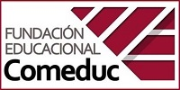

De Mundo Contable ...

|

|
Programadora: Estética y Diseño
|
Programador: Remuneraciones
|
|
Francisca Ruiz, programadora con mas
de 10 años de experiencia ,
cuenta ya
con 5 años trabajando en
nuestra em-
presa, actualmente encargada
de nues
tro: software " Liquisoft ",
además de es-
tar constantemente aportando
en otros
proyectos para hacerlos más
agradables
a la vista del cliente.
|
Matias Huentian, programador con más de
11 años de experiencia, habiendo trabajado
hace 4 años en nuestra empresa, además de
contar con una particìpación extensa a lo lar-
go de
muchos proyectos llevados a cabo en
esta empresa, actualmente es el encargado
de nuestro software "Liquisoft" en conjunto
con Francisca Ruiz.
|

|

|
Programadora: Lógica en BTool 2.0"
|
Programadora: Gráficos en BTool 2.0
|
|
Genesis Cáceres, programadora con más de
8 años de experiencia,
cuenta ya con 6 años
trabajando en nuestra empresa, actualmente
encargada de nuestro software " BTool2.0 ",
desarrollando la corriente lógica de dicha he-
rramienta.
|
Lily Campos, programadora con más de 15 años
de experiencia,
ya ha trabajado hace 7 años en
nuestra empresa,
actualmenmte es la administra-
dora de nuestro software "BTool2.0".
Reconocida
por tomarse su trabajo en serio y centrarse siem-
pre en los objetivos marcados.
|

|

|
Programador: Diseño Web
|
Programadora: Encargada de FTool
|
|
Ares Murillo, programador con mas de 3
años de experiencia,
cuenta ya con 2 traba-
jando en nuestra empresa,
actualmente co-
encargado del software " BTool2.0 ",
especi-
alizado en diseño de páginas web,
se ha adap-
tado a los cambios requeridos por los clientes.
|
María Caneo, programadora con mas de 9 años
de experiencia,
ha cumplido 1 en nuestra em-
presa,
actualmente es la administradora y creado-
ra de nuestro software FTool
Reconocida por ser
excelente empleada, se destaca en programas peque-
ños y funcionales al 100%.
|

|

|
Programadora: Especialista en recursos humanos
|
Programadora: Administradora de BBDD
|
|
Pia boyssieres, programadora con 5 años de experiencia ,
cuenta hoy con 2 años trabajando en nuestra empresa,
estuvo al cargo de nuestro software " Btool ".
|
Sujey Millacoy programadora con 5 años de
experiencia,
ya trabaja hace 2 años en nues-
tra empresa,
estuvo al cargo de nuestro soft-
ware " Btool ".
Destacada por su creatividad
y fácil manejo de datos.
|
" Agradecemos a nuestro team por su trabajo dedicado y de calidad, siendo ellos la base de MundoContable! "
